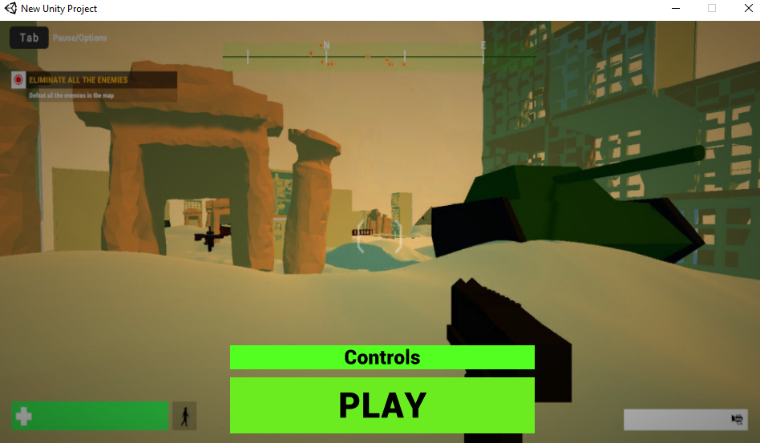
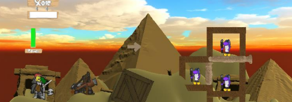

IVAN SARAFOV
🚀 Welcome to my portfolio!
I like challenging myself!
📜About me
Hello, I am third year Game design student at Hanze UAS. This is my portfolio website. Here will give some information about me and show some of the projects I have done the past years. Thank you!
Minor- Healthy Aging The first two block of the year i had the opportunity to created different products for clients in the niche of Healthy Aging
The second year of my bachelor degree, I have learnt to use Unity and blender to the extend of making 3D game alone.
👩🏽🚀 Projects
👩🏽Happy Evil Robots
This is one of the most intresting projects, that i have worked on. The game is about a robot that has to escape the matrix. the has to pass different level, whcih are gradually increasing the difficulty. At thr end there is final boss that has to be eliminated, in order to compleate the game.
🏆 NPC Unity Game
This is a game, that was made only by myself. It is a pov shooter game, where the player has to complete couple different maps, in order to complete the game. There are various enemies, that will try to eliminate him. Furthermore, the environment is a miitary base in the desert. There are a lot of 3D elements, such as tanks, drones, piramieds etc.
🏆 Websites
During my study, i have created a lot of website. Some of them were project for the university, others were my personal project for my own agency. One of the best is my other portfolio website.
🏆 functioning Car Agency
One of the biggest and most difficult project, that i have created is a car agency. It specializes in providing a special service that is not offered in Europe at the moment. The company is currently funcioning and developing.
👩🏽🚀 Skills
🏆 Communication
One of my most appreciated skills is my Communication. One of the reasons that i have this skill developed is owning a agency.
🏆 3D modeling
One of my skils, that i consieder a strenght is my ability to create different 3D models in blender. I have experience with it, because of my study in Hanze Universiity. Sometimes the models are crated for games, Sometimes for other purposes, for example for 3D printed models.
🏆 Web design/development
I have experience with developing websites. I use HTML, CSS and Javascript and some of its libraryis, like react, three.js and others. I am able to create interactive wesbties for different purposes, like dropshipping portfolios or marketing of differet prodcuts.
🏆 Sales, online marketing and communocation
Having my own sales agency helped me develop this quality. I am able to advertize different products and services. MOreover I am abele to create digital marketing tools for spreading awarness and advertisement.
👩🏽🚀 Examples of projects
🏆 Happy Evil Robots

🏆 Rpg game
🏆 2d Platformer
Thanks for watching!